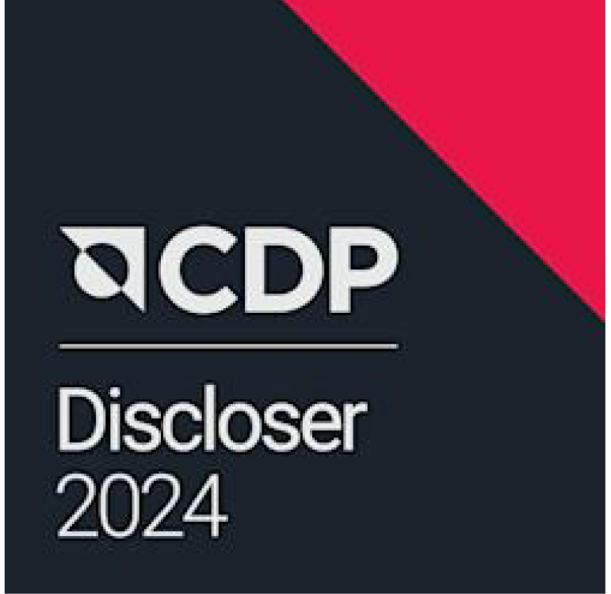
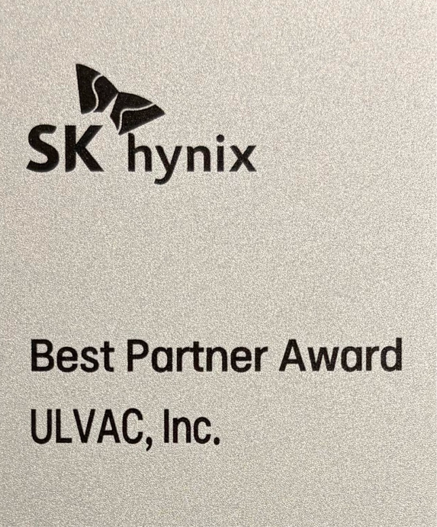
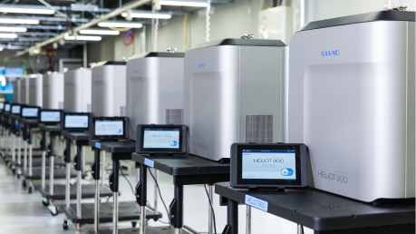
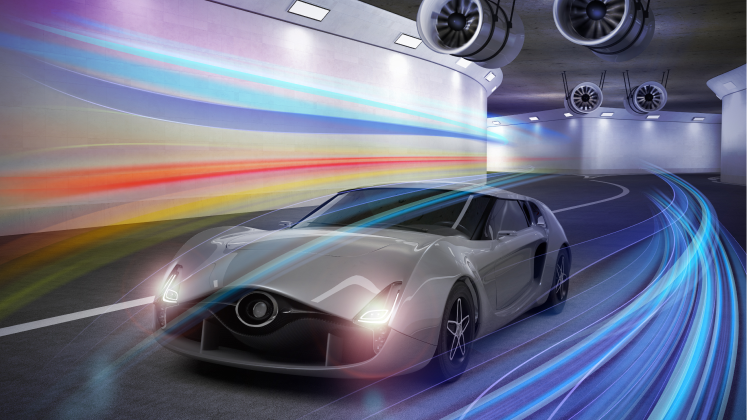
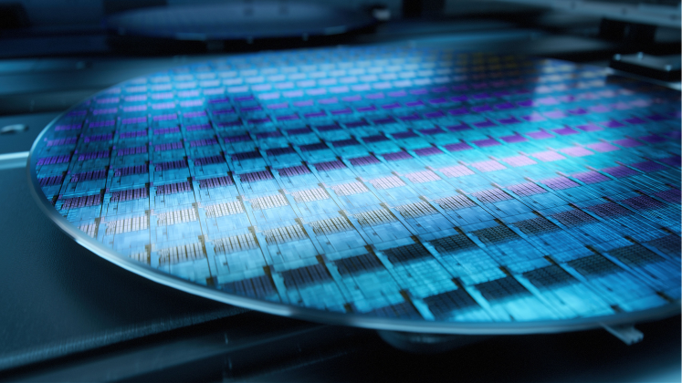
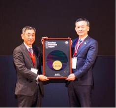
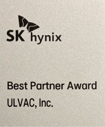

<div class="magazine-page magazine-articles" lang="ja">
  <section id="latest" class="article-section content-shell" aria-labelledby="latest-title">
    <header class="article-heading" data-magazine-reveal><h2 id="latest-title" lang="en">Latest Articles</h2><a class="archive-link" href="https://www.ulvac.co.jp/wiki/" aria-label="最新記事一覧">See All</a></header>
    <div class="article-grid">
      <article data-magazine-reveal><a class="article-card" href="https://www.ulvac.co.jp/wiki/tech/20260216-vacuum-surface-science/"><span class="article-photo crop-award"></span><span class="article-badge">テクノロジーを知る</span><h3>学会誌「表面と真空」に論文が掲載されました</h3><time datetime="2026-02-16">2026.02.16</time></a></article>
      <article data-magazine-reveal><a class="article-card" href="https://www.ulvac.co.jp/wiki/2020251219/"><span class="article-photo crop-discloser"></span><span class="article-badge">人とものづくり</span><h3>笑顔と希望に包まれたアルバックタイランド20周年式典</h3><time datetime="2026-01-14">2026.01.14</time></a></article>
      <article data-magazine-reveal><a class="article-card" href="https://www.ulvac.co.jp/wiki/ulfes2025/"><span class="article-photo crop-certificate"></span><span class="article-badge">人とものづくり</span><h3>ULFes2025 開催レポート</h3><time datetime="2026-01-08">2026.01.08</time></a></article>
    </div>
  </section>
  <section id="popular" class="article-section article-section--popular content-shell" aria-labelledby="popular-title">
    <header class="article-heading" data-magazine-reveal><h2 id="popular-title" lang="en">Popular Articles</h2></header>
    <div class="popular-layout">
      <ol class="ranked-list" role="list">
        <li data-magazine-reveal><a class="article-card ranked-card" href="https://www.ulvac.co.jp/wiki/-5/"><div><span class="article-badge">基礎から学ぶ</span><h3>「低真空」から 「極高真空」まで　真空の5つの分類<br>Vol. 4</h3><time datetime="2017-07-11">2017.07.11</time></div></a></li>
        <li data-magazine-reveal><a class="article-card ranked-card" href="https://www.ulvac.co.jp/wiki/post-5/"><div><span class="article-badge">基礎から学ぶ</span><h3>「平均自由行程」って何だろう?　Vol.6</h3><time datetime="2017-07-24">2017.07.24</time></div></a></li>
        <li data-magazine-reveal><a class="article-card ranked-card" href="https://www.ulvac.co.jp/wiki/post-4/"><div><span class="article-badge">基礎から学ぶ</span><h3>圧力の差は、空間に存在する気体分子の数「分子密度」でわかる　Vol. 5</h3><time datetime="2017-07-14">2017.07.14</time></div></a></li>
        <li data-magazine-reveal><a class="article-card ranked-card" href="https://www.ulvac.co.jp/wiki/vol-11/"><div><span class="article-badge">基礎から学ぶ</span><h3>真空中での温度は放射と伝導で伝わっていく!?　Vol. 11</h3><time datetime="2017-09-20">2017.09.20</time></div></a></li>
      </ol>
      <aside class="popular-tags" aria-labelledby="popular-tags-title" data-magazine-reveal><h3 id="popular-tags-title" lang="en">Popular Tags</h3>
        <div class="tag-list"><a href="https://www.ulvac.co.jp/wiki/tag/半導体/">#半導体</a><a href="https://www.ulvac.co.jp/wiki/tag/スパッタリング/">#スパッタリング</a><a href="https://www.ulvac.co.jp/wiki/tag/MEMS/">#MEMS</a><a href="https://www.ulvac.co.jp/wiki/tag/プラズマ/">#プラズマ</a><a href="https://www.ulvac.co.jp/wiki/tag/エッチング/">#エッチング</a><a href="https://www.ulvac.co.jp/wiki/tag/Power%20Device/">#Power Device</a><a href="https://www.ulvac.co.jp/wiki/tag/真空教室/">#真空教室</a><a href="https://www.ulvac.co.jp/wiki/tag/Technical%20Journal/">#Technical Journal</a><a href="https://www.ulvac.co.jp/wiki/tag/Lab-in-Fab/">#Lab-in-Fab</a><a href="https://www.ulvac.co.jp/wiki/tag/真空展/">#真空展</a></div>
      </aside>
    </div>
  </section>
  <section id="technology" class="article-section content-shell" aria-labelledby="technology-title">
    <header class="article-heading" data-magazine-reveal><h2 id="technology-title">テクノロジーを知る</h2><a class="archive-link" href="https://www.ulvac.co.jp/wiki/category/technologies-solutions/" aria-label="テクノロジーの記事一覧">See All</a></header>
    <div class="article-grid">
      <article data-magazine-reveal><a class="article-card" href="https://www.ulvac.co.jp/wiki/post-13/"><span class="article-badge">テクノロジーを知る</span><h3>ドライエッチングとは</h3><time datetime="2022-04-21">2022.04.21</time></a></article>
      <article data-magazine-reveal><a class="article-card" href="https://www.ulvac.co.jp/wiki/post-11/"><span class="article-badge">人とものづくり</span><h3>光学薄膜とは</h3><time datetime="2022-02-15">2022.02.15</time></a></article>
      <article data-magazine-reveal><a class="article-card" href="https://www.ulvac.co.jp/wiki/gan/"><span class="article-badge">人とものづくり</span><h3>GaNパワーデバイス</h3><time datetime="2022-02-01">2022.02.01</time></a></article>
    </div>
  </section>
  <section id="society" class="article-section content-shell" aria-labelledby="society-title">
    <header class="article-heading" data-magazine-reveal><h2 id="society-title">社会とのつながり</h2><a class="archive-link" href="https://www.ulvac.co.jp/wiki/category/vacuum-and-society/" aria-label="社会とのつながりの記事一覧">See All</a></header>
    <div class="article-grid">
      <article data-magazine-reveal><a class="article-card" href="https://www.ulvac.co.jp/wiki/post-17/"><span class="article-photo crop-award"></span><span class="article-badge">社会とのつながり</span><h3>真空実験でワクワク体験！茅ヶ崎「子どもふれあいまつり」参加</h3><time datetime="2025-11-10">2025.11.10</time></a></article>
      <article data-magazine-reveal><a class="article-card" href="https://www.ulvac.co.jp/wiki/100/"><span class="article-photo crop-discloser"></span><span class="article-badge">社会とのつながり</span><h3>富士裾野工場の電力、実質100％再生可能エネルギーに切り替えました！</h3><time datetime="2025-08-11">2025.08.11</time></a></article>
      <article data-magazine-reveal><a class="article-card" href="https://www.ulvac.co.jp/wiki/100-1/"><span class="article-photo crop-certificate"></span><span class="article-badge">社会とのつながり</span><h3>森林の力を未来へつなぐ----やどりき水源林での森林再生プロジェクト</h3><time datetime="2025-08-01">2025.08.01</time></a></article>
    </div>
  </section>
  <section id="future" class="article-section content-shell" aria-labelledby="future-title">
    <header class="article-heading" data-magazine-reveal><h2 id="future-title">未来を探る</h2><a class="archive-link" href="https://www.ulvac.co.jp/wiki/category/our-initiatives/" aria-label="未来を探る記事一覧">See All</a></header>
    <div class="article-grid">
      <article data-magazine-reveal><a class="article-card" href="https://www.ulvac.co.jp/wiki/post-18/"><span class="article-badge">未来を探る</span><h3>産学連携で未来を創る！アルバック×大阪大学の博士育成プロジェクト</h3><time datetime="2026-01-08">2026.01.08</time></a></article>
      <article data-magazine-reveal><a class="article-card" href="https://www.ulvac.co.jp/wiki/li/"><span class="article-badge">未来を探る</span><h3>真空蒸着プロセスを用いたLi 金属負極の開発</h3><time datetime="2020-01-23">2020.01.23</time></a></article>
      <article data-magazine-reveal><a class="article-card" href="https://www.ulvac.co.jp/wiki/post-12/"><span class="article-badge">未来を探る</span><h3>垂直配向カーボンナノチューブ電極の キャパシタへの応用</h3><time datetime="2019-12-23">2019.12.23</time></a></article>
    </div>
  </section>
  <section id="people" class="article-section content-shell" aria-labelledby="people-title">
    <header class="article-heading" data-magazine-reveal><h2 id="people-title">人とものづくり</h2><a class="archive-link" href="https://www.ulvac.co.jp/wiki/category/our-people%E2%80%8B/" aria-label="人とものづくりの記事一覧">See All</a></header>
    <div class="article-grid">
      <article data-magazine-reveal><a class="article-card" href="https://www.ulvac.co.jp/wiki/post-21/"><span class="article-photo crop-award"></span><span class="article-badge">人とものづくり</span><h3>子どもも大人もワクワク！九州工場の音楽フェス</h3><time datetime="2026-01-08">2026.01.08</time></a></article>
      <article data-magazine-reveal><a class="article-card" href="https://www.ulvac.co.jp/wiki/post-19/"><span class="article-photo crop-discloser"></span><span class="article-badge">人とものづくり</span><h3>仲間とともに勝ち取った栄誉！</h3><time datetime="2025-12-09">2025.12.09</time></a></article>
      <article data-magazine-reveal><a class="article-card" href="https://www.ulvac.co.jp/wiki/post-20/"><span class="article-photo crop-certificate"></span><span class="article-badge">人とものづくり</span><h3>韓国政府からの栄誉、白忠烈氏が「産業褒章」を受章</h3><time datetime="2025-12-09">2025.12.09</time></a></article>
    </div>
  </section>
  <section id="basics" class="article-section content-shell" aria-labelledby="basics-title">
    <header class="article-heading" data-magazine-reveal><h2 id="basics-title">基礎から学ぶ</h2><a class="archive-link" href="https://www.ulvac.co.jp/wiki/category/vacuum-classroom/" aria-label="基礎から学ぶ記事一覧">See All</a></header>
    <div class="article-grid">
      <article data-magazine-reveal><a class="article-card" href="https://www.ulvac.co.jp/wiki/post-1/"><span class="article-badge">基礎から学ぶ</span><h3>空間に何もない状態が「真空」ではないって、知ってた?　Vol.1</h3><time datetime="2017-05-10">2017.05.10</time></a></article>
      <article data-magazine-reveal><a class="article-card" href="https://www.ulvac.co.jp/wiki/1-more-than-moore/"><span class="article-badge">基礎から学ぶ</span><h3>1. More than Mooreとプラズマ技術</h3><time datetime="2021-10-27">2021.10.27</time></a></article>
      <article data-magazine-reveal><a class="article-card" href="https://www.ulvac.co.jp/wiki/vol-12/"><span class="article-badge">基礎から学ぶ</span><h3>凍結真空乾燥とは?　Vol. 12</h3><time datetime="2017-10-04">2017.10.04</time></a></article>
    </div>
  </section>
  <section id="series" class="article-section article-section--series" aria-labelledby="series-title">
    <div class="content-shell"><header class="article-heading" data-magazine-reveal><h2 id="series-title" lang="en">Series &amp; Features</h2><a class="archive-link" href="https://www.ulvac.co.jp/wiki/" aria-label="シリーズ・特集一覧">See All</a></header>
      <div class="article-grid">
        <article data-magazine-reveal><a class="article-card series-card" href="https://www.ulvac.co.jp/wiki/category/vacuum-classroom/hibari-classroom/"><span class="article-photo crop-classroom"></span><div><span class="article-badge">Series</span><h3>真空ひばりの真空教室</h3></div></a></article>
        <article data-magazine-reveal><a class="article-card series-card" href="https://www.ulvac.co.jp/research_development/technical_journal/index.html"><span class="article-photo crop-discloser"></span><div><span class="article-badge">Feature</span><h3>ULVAC Technical Journal</h3></div></a></article>
        <article data-magazine-reveal><a class="article-card series-card" href="https://www.ulvac.co.jp/news/prm/index.html"><span class="article-photo crop-publication"></span><div><span class="article-badge">Feature</span><h3>広報誌</h3></div></a></article>
      </div>
    </div>
  </section>
</div>
